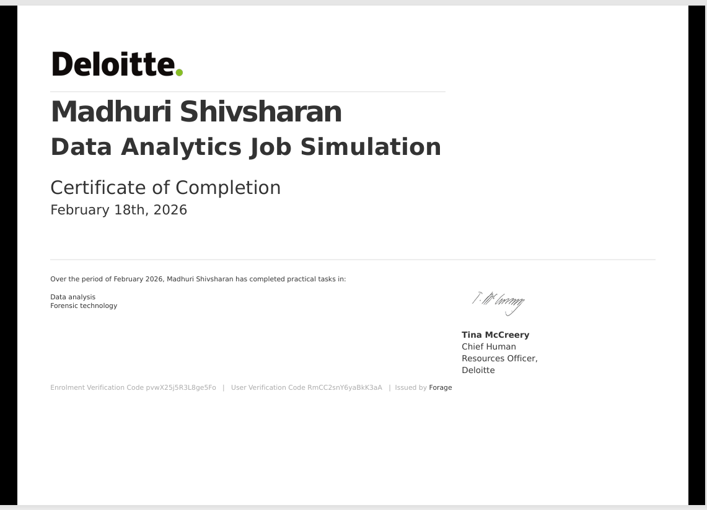
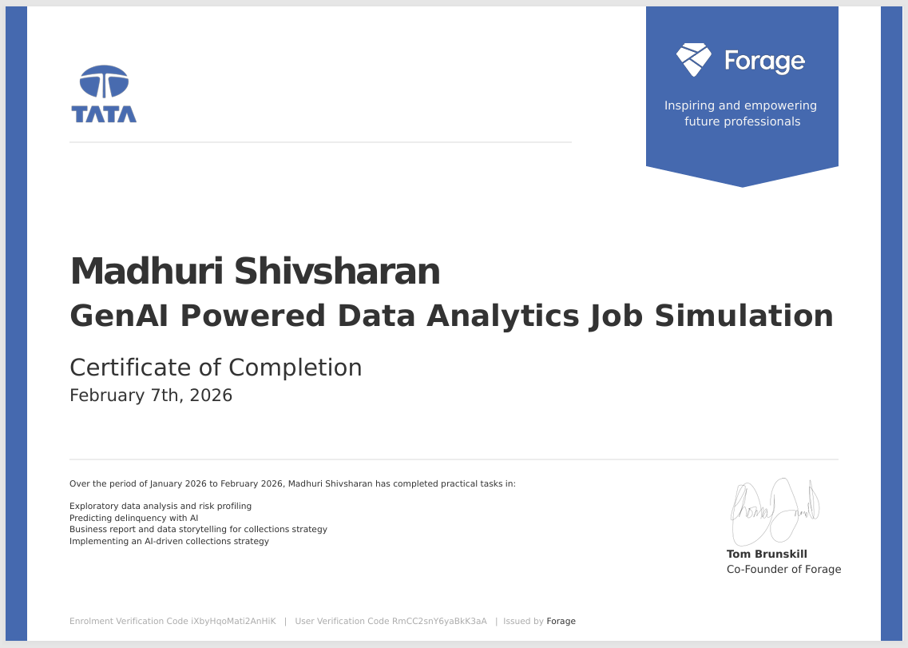
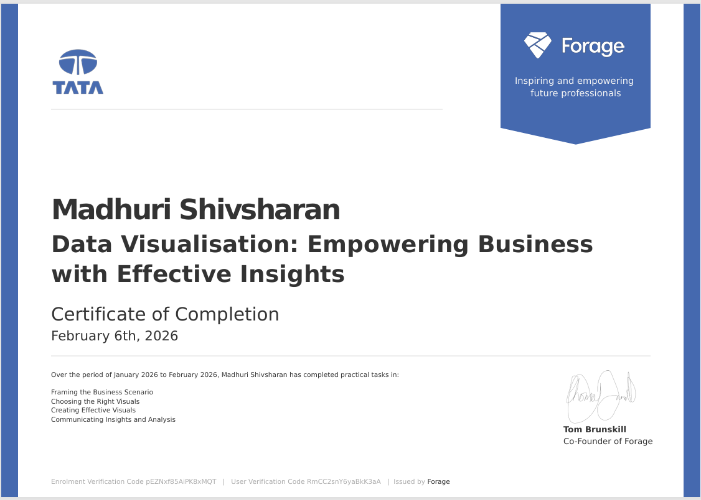
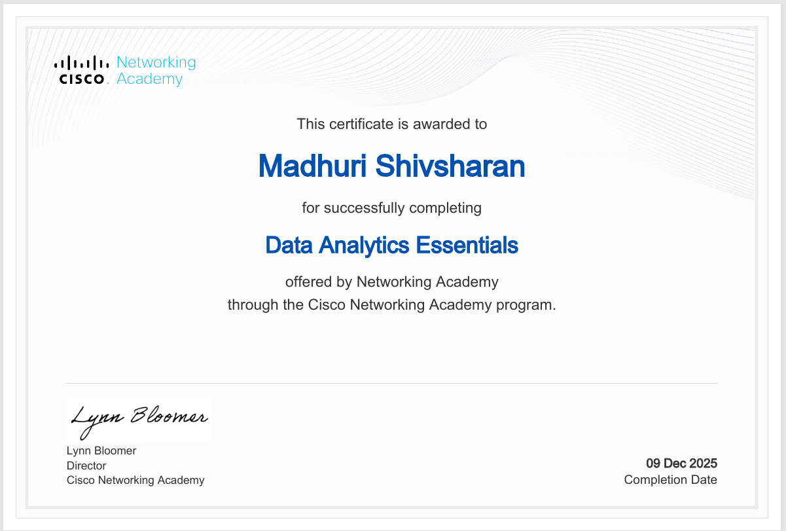
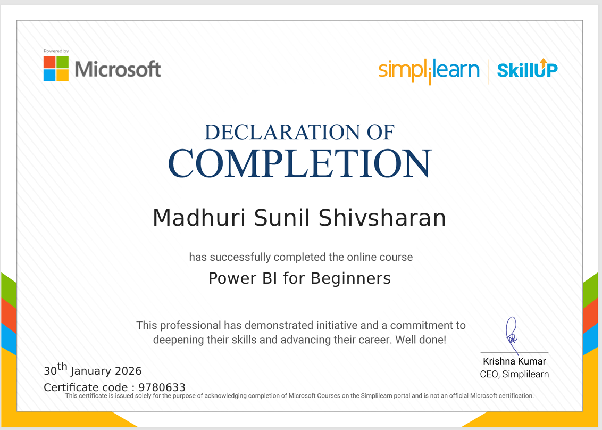
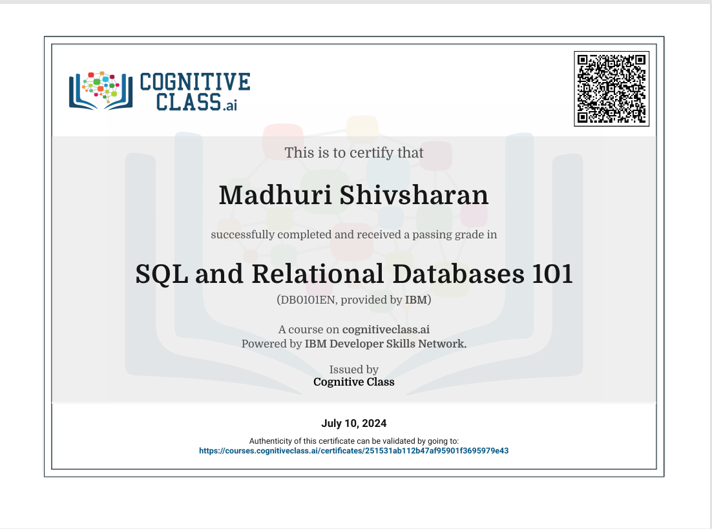
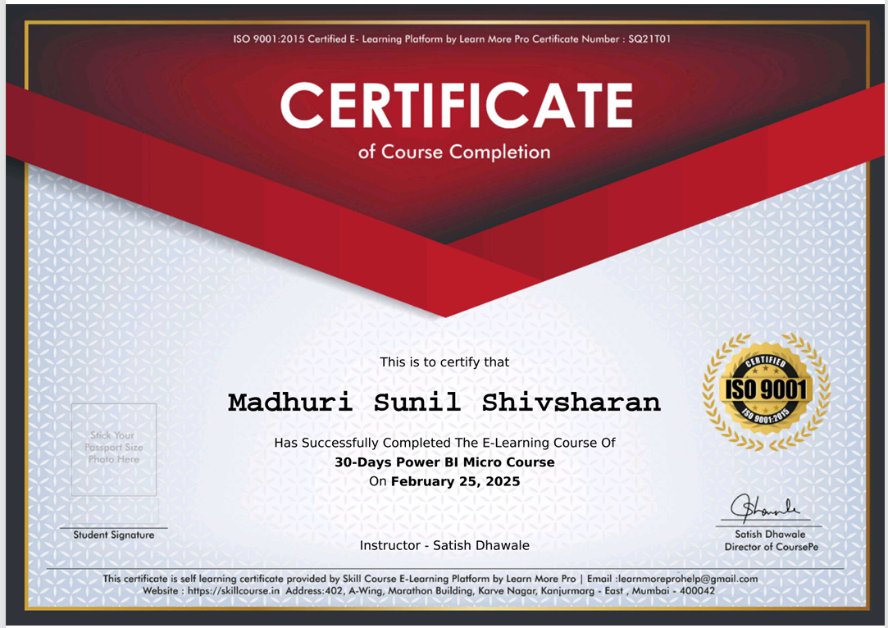

Deloitte Australia Data Analytics Job Simulation on Forage

Skills Acquired:
Completed a Deloitte job simulation involving data analysis and forensic technology
Created a data dashboard using Tableau
Used Excel to classify data and draw business conclusions
GenAI Powered Data Analysis Job simulation Tata Group (via Forage)

Skills Acquired:
Executed exploratory data analysis, risk profiling, and delinquency prediction using AI-driven strategies
Developed business reports and utilized data storytelling for collections strategy implementation
Identifying and solving real-world business problems with data
Data Visualizations: Empowering Business with Effective Insights|Tata Group (via Forage)

Skills Acquired:
Completed practical tasks in framing business scenerios, choosing appropriate visuals and communicating data-driven insights
End-to-end data analysis lifecycle: data collection, cleaning, and analysis
Use of data visualization tools to communicate insights
Data Analytics Essentials, By Cisco Networking Academy

Skills Acquired:
Completed an industry-recognized certification focused on the fundamentals of data analytics
Developed a strong understanding of the data analytics lifecycle,including data collection,data cleaning,analysis,and interpretation
Applied analytical thinking to derive insights and support informed decision-making
Power BI for Beginners Microsoft (via Simplilearn|Skill Up)

Skills Acquired:
Completed a foundational Power BI course covering data import,data modeling,DAX basics,and interactive dashboard creation
Gained hands on experience building reports using real-world datasets to support data-driven decision-making
Publishing and sharing reports on Power BI Service
Integration of different data sources into Power BI
SQL and Relational Databases 101 IBM (via Cognitive Class-IBM Developer Skills Network)

Skills Acquired:
Successfully completed IBM's SQL and Relational Databases 101 course,gaining hands on experiance with relational database concepts,writing SQL queries,and managing structured data
Learned to retrieve,filter,aggregate,and analyze data SQL to support real-world data analysis tasks
30-Days Power BI Micro Course Skill Course (Learn More Pro-ISO 9001 Certified )

Skills Acquired:
Completed a 30-day Power BI micro course focused on hands on dashboard development and data visualization
Gained practical experience in importing data,trasforming datasets using Power Query,creating realtionships and designing interactive dashboards for business reporting